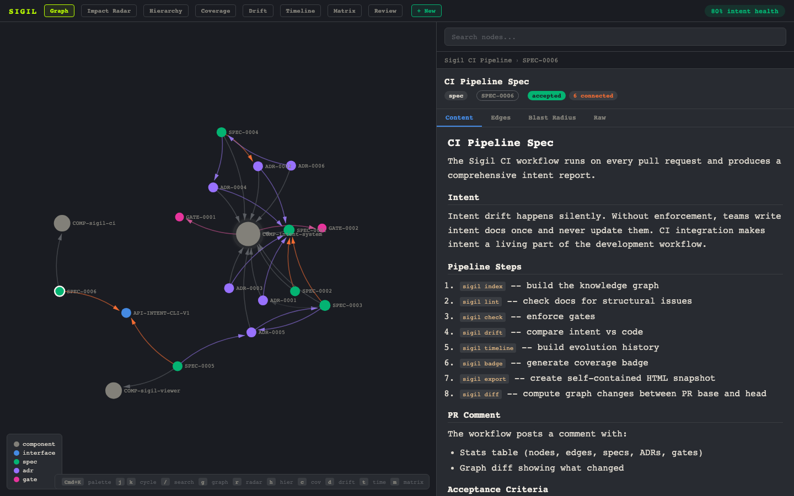

AI writes code faster than humans can review it. The diff gets reviewed. The decision behind it doesn't. Sigil makes specs, ADRs, and constraints reviewable — and enforces them at merge.
Open-source · Python CLI · Zero platform dependencies · GitHub ↗

A developer changed the payment gateway. The diff looked clean.
But GATE-0005 knew that any change to services/payments/
can't touch raw card numbers. PR blocked until intent is updated.
sigil serve before a sprint to review the full architecture picture together. Gaps show up red.
sigil why src/auth.ts and trace from file to component to spec to ADR. Ask sigil impact COMP-payments and see blast radius before touching anything.
uses: fielding/sigil@v1. No platform, no setup.
sigil drift finds components without specs, files without owners, and interfaces nobody consumes.
pip install sigil-cli && sigil init and you're running in under a minute.
sigil serve before the sprint. Everyone sees the same architecture picture — what's planned, what's connected, what's missing. Align before the code starts.
One command to install. One command to see your own project in the graph.
Requires Python 3.11+ · uv and pipx also supported